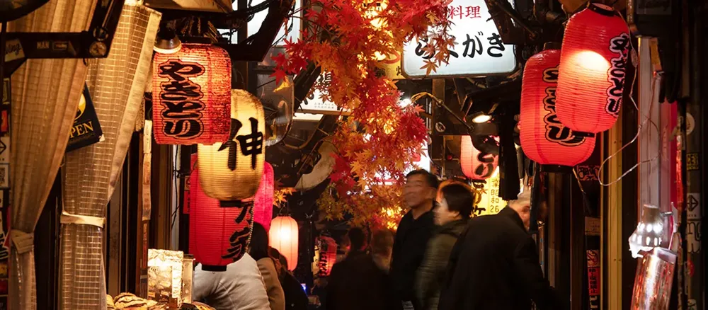
City도시의 결을 걷다
익숙한 일본에서 아직 만나지 못한 일본까지. 지역과 풍경, 음식과 계절을 하나의 아틀라스에서 발견합니다.
Intro visual · video placeholder유명한 목적지만 나열하는 대신, 도시의 골목과 온천의 고요함, 오래된 거리와 지역의 분위기를 한 흐름 안에서 보여줍니다.

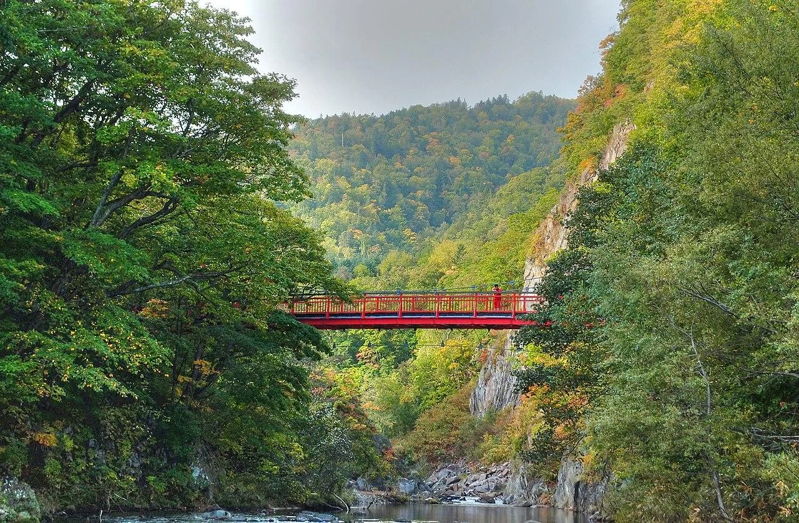
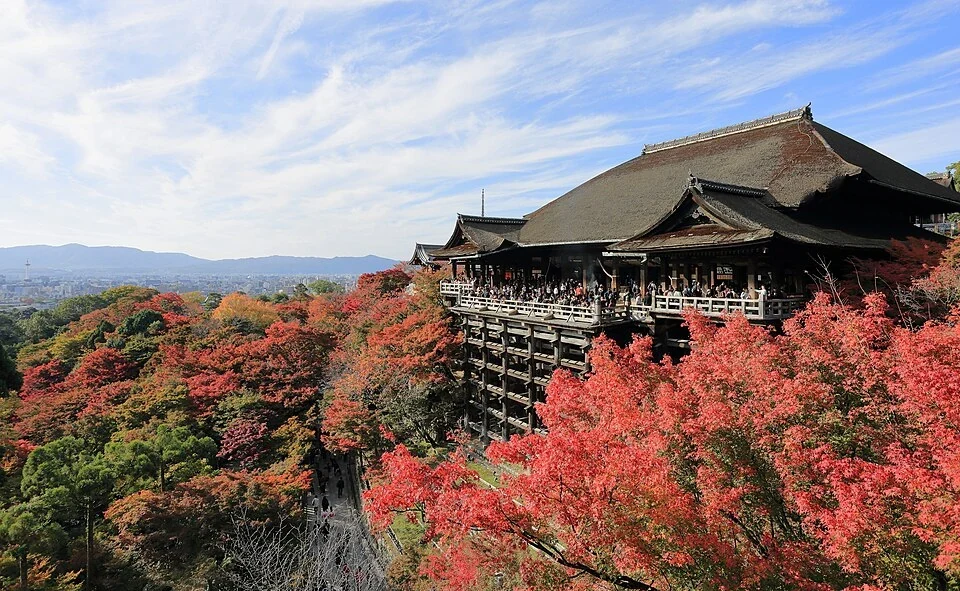
사진으로 영감을 얻고, 지역을 비교하고, 필요할 때 같은 정보를 지도 위에서 확인합니다. 탐색과 지도는 서로 다른 사이트가 아니라 같은 Jatlas를 보는 두 가지 방식입니다.
처음에는 사진과 이야기로 탐색하고, 위치가 궁금해지는 순간 지도 보기로 전환하세요.
영상은 추후 실제 인트로 영상으로 교체할 수 있도록 현재 대표 이미지로 대체했습니다.
EDITOR'S JOURNEY · YAMANASHI
호수와 신사, 오래된 마을과 전망을 한 흐름으로 둘러보는 후지산권 여행.
마지막으로 보던 지역에서 이어갑니다.
지역을 고르기 전에 여행의 분위기부터 골라도 됩니다. 각 카드는 기존 Jatlas 관광 데이터로 바로 이어집니다.
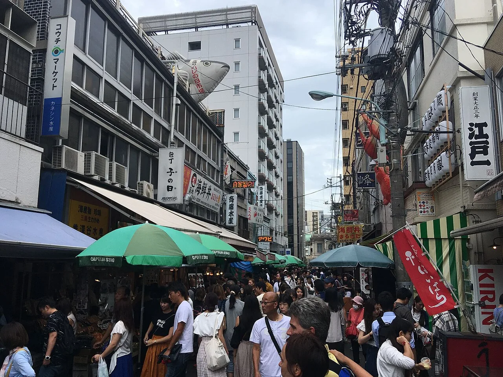
전국 지도를 먼저 볼 필요는 없습니다. 사진으로 끌리는 지역을 고른 뒤, 필요할 때 지도에서 위치를 확인할 수 있습니다.
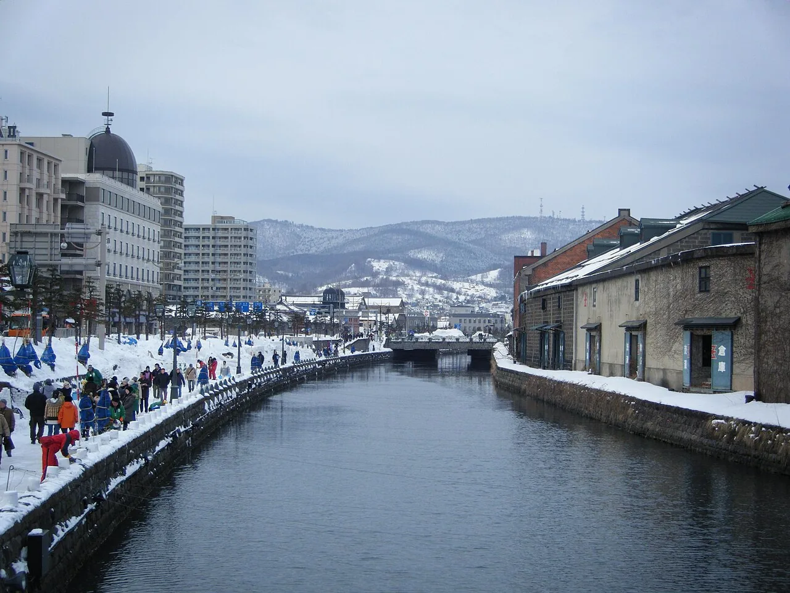
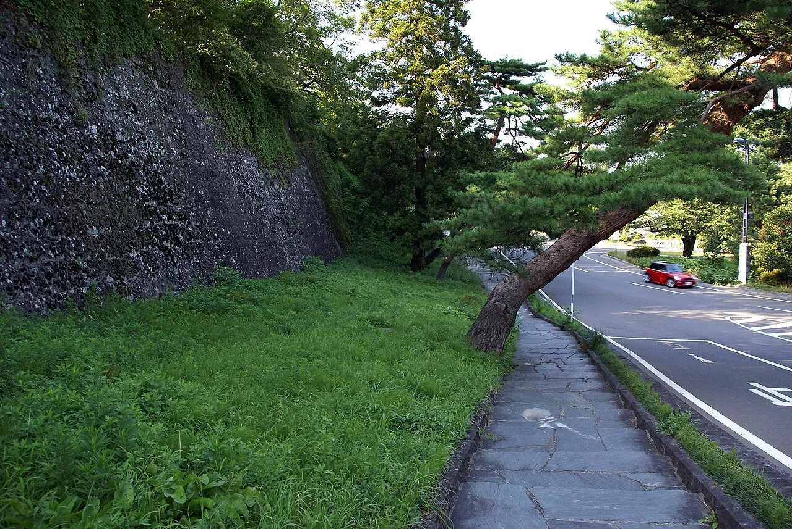
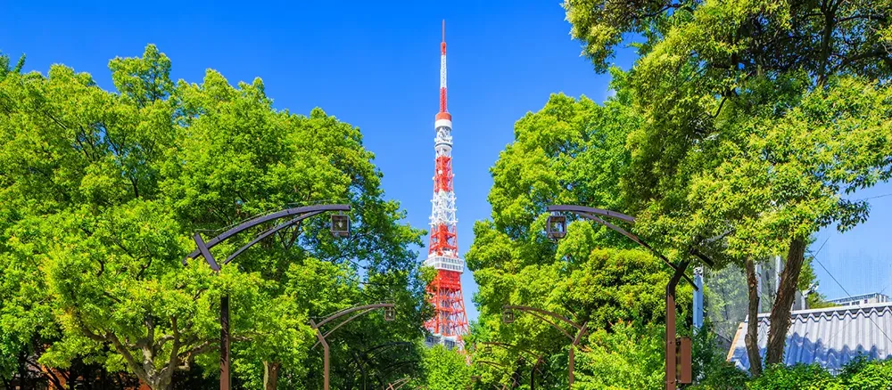
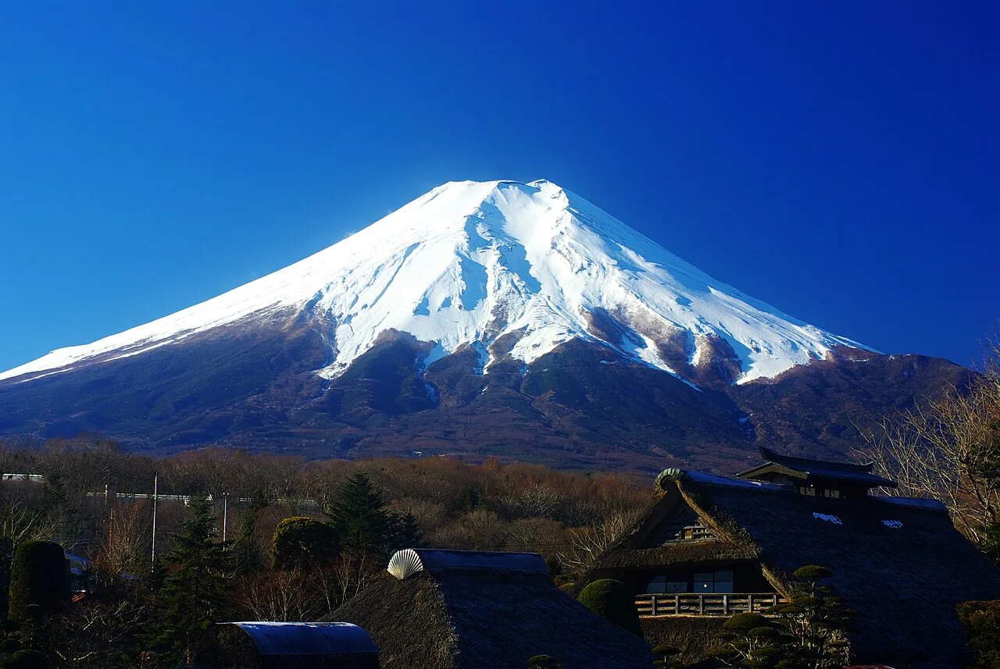
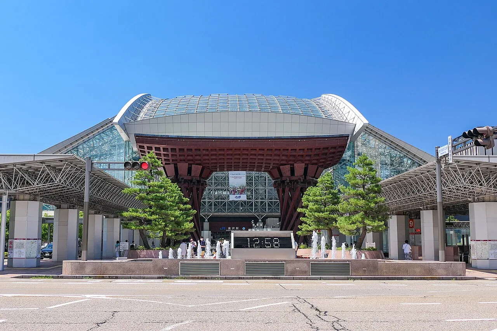
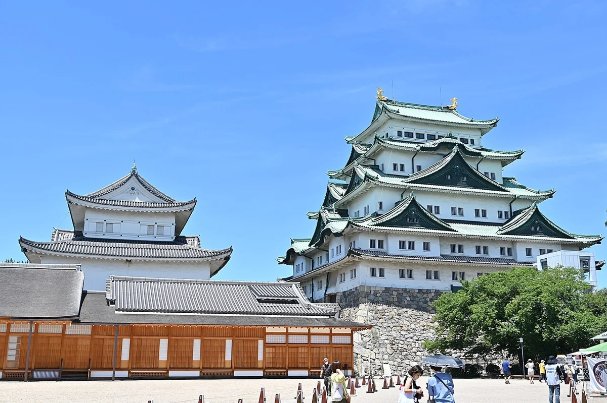
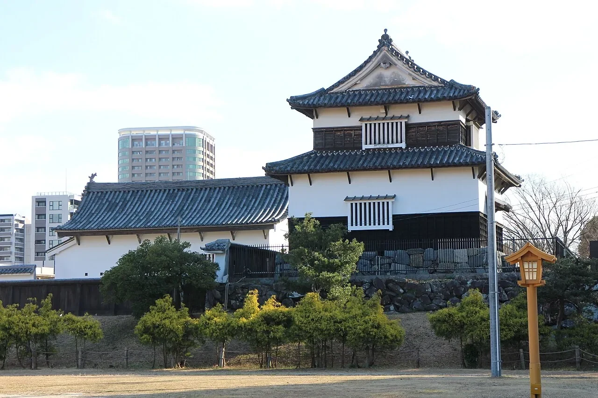
온천, 문화, 도시, 음식처럼 여행의 결에서 출발하는 탐색 방식입니다.
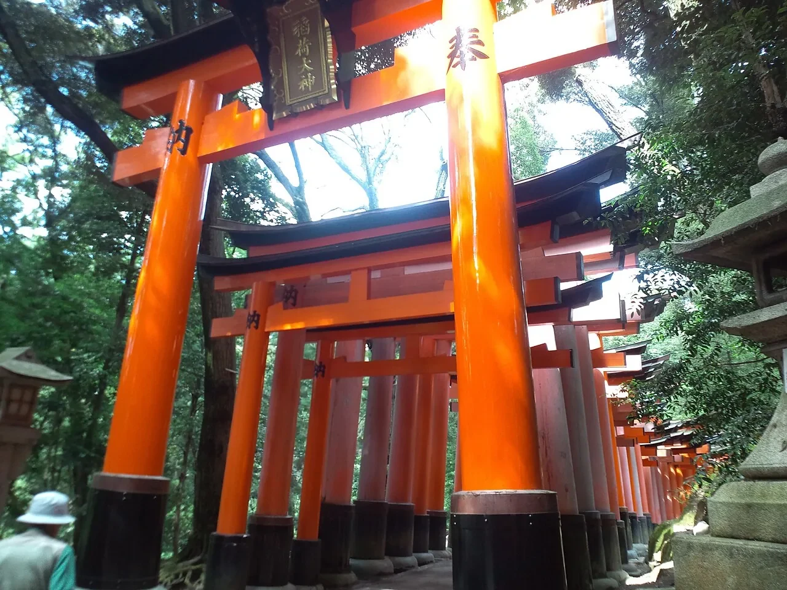
DISCOVER JAPAN
마음에 드는 곳에서 시작하는 발견.
지방 이름을 눌러 확대하거나 두 손가락으로 지도를 늘려보세요. 한 손가락으로 이동할 수 있습니다.
경계: 지구지도 일본 · 국토지리원 / dataofjapan · 해안선 단순화 · 북쪽 위
벚꽃·단풍은 예년 기준입니다. 다음 회차가 발표되지 않은 행사는 지난 날짜를 미래 일정으로 표시하지 않습니다.
공식 관광·주최 기관 자료 기준 · 방문 연도와 날짜에 맞춰 운영 안내를 확인하세요.
YOUR COLLECTION
지역별로 모아봅니다. 하나의 여행 일정으로 합쳐지지 않습니다.
이 브라우저에만 저장됩니다.